配位化学基础
7.1 配位化合物的概念
7.1.1 什么是配位化合物？
配合物主要由配体与金属离子通过配位键组成。
日常生活中的配合物例子有很多，比如普鲁士蓝\({\ce{Fe4[Fe(CN)6]3}}\)，化学名称
Tips:
配合物由中心离子和配体组成。 + 中心离子/原子：主要是金属离子（原子） + 配体：指与中心离子有化学键作用的分子或基团 + 配位键：配体与中心离子之间的化学键
由以上知识，我们可以判断普鲁士蓝中\({\ce{Fe^{2+}}}\)是中心离子，\({\ce{CN-}}\)为配体。
例如：莫尔盐\({\ce{(NH4)2Fe(SO4)2·6H2O}}\)
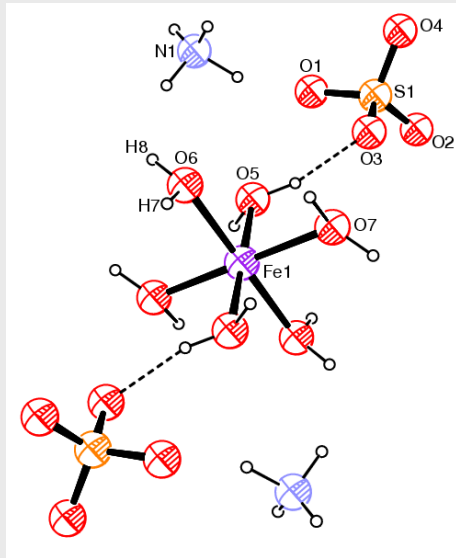
从上图我们可以发现： + \({\ce{Fe^{2+}}}\)离子是中心离子
+ \({\ce{H2O}}\)分子是配体
+ \({\ce{SO^{2-}4}}\)离子不是配体，其与配合物阳离子之间存在氢键我们对配位键最重要的判据是晶体结构中原子间距
7.1.2 配位化合物的命名
我们先看一个配合物的命名表：
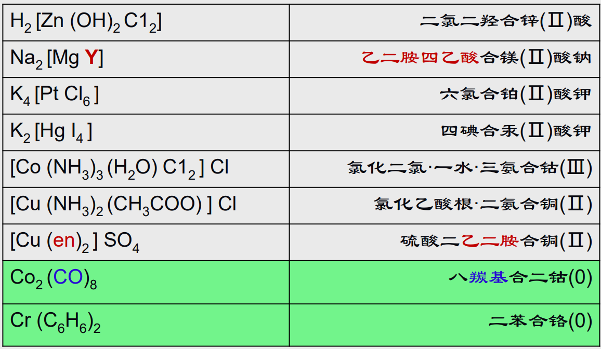
Tips:
由以上表格我们可以总结以下规律： + 先确定内界与外界，在[ ]内的为内界，在[ ]外的是外界。 + 确定内界里的配体与中心离子，一般中心离子为过渡金属离子 + 内界内的命名为几个配体+ 合 + 中心离子的形式。例如\({\ce{[Cu(NH3)2(CH3COO)]+}}\)被命名为乙酸根·二氨合铜阳离子 + 根据内界与外界分别扮演阴离子或者是阳离子，一般按照对应的盐的命名方式来命名。 还是以\({\ce{[Cu(NH3)2(CH3COO)]Cl}}\)为例子，命名为氯化乙酸根·二氨合铜 + 如果是中心原子而非离子，那么一般没有内外界之分，直接命名即可 例如\({\ce{Co2(CO)8}}\)，命名为八羰基合二钴
7.1.3 配体与配位原子
对于一个配合物，如\({\ce{[Pt(NH3)4(NO2)Cl]CO3}}\)，其中\({\ce{[Pt(NH3)4(NO2)Cl]^{2+}}}\)为内界，也称为配离子，而\({\ce{CO3^{2-}}}\)则是外界，在
Tips:
如配合物\({\ce{[Pt(NH3)4(NO2)Cl]CO3}}\) + 内界：\({\ce{[Pt(NH3)4(NO2)Cl]^{2+}}}\) + + 中心离子：\({\ce{Pt^{3+}}}\) + + 配体：\({\ce{NH3}}\)，\({\ce{NO2}}\)，\({\ce{Cl-}}\) + + + 配原子：\({\ce{N}}\)，\({\ce{Cl}}\) + 外界：\({\ce{CO3^{2-}}}\)Tips:
+ 含有多个配原子的配体，称为多齿配体，例如硫酸根 + 同时与两个或多个中心离子形成配位键的配体，成为桥配体~~（左手抓一个，右手也抓一个！）~~ + 配体中直接与中心离子形成的配位键的原子称为配原子，其中\({\ce{N、O、S}}\)与卤素原子都是常见的配原子。简单举一个例子在下面，请以以上知识来解释\({\ce{[CU(H2O)4SO4]·H2O}}\)分子结构：
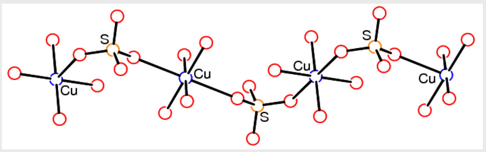
7.1.4 配位方式
- 单齿配位
配体的一个配原子与一个中心离子配位 - 螯合配位（双齿、多齿）
多齿配体的多个配原子与一个中心离子配位，通常这种配位方式形成的配合物很稳定——螯合效应
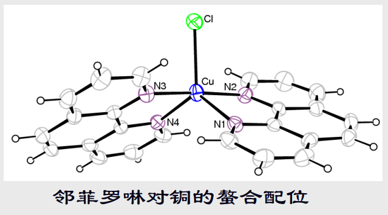
思考：
如何从热力学角度（焓效应和熵效应）解释螯合物的稳定性？ - 桥联配位
桥联配位存在两种不同的形式：原子桥联配位与基团桥联配位- 原子桥联配位：一个配原子同时与两个或多个中心离子配位
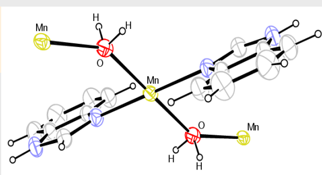
- 基团桥联配位：多齿配体的多个配原子与不同的中心离子配位。
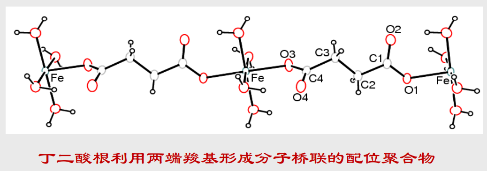
- 原子桥联配位：一个配原子同时与两个或多个中心离子配位
7.2 配合物的结构
7.2.1 配位数与配位几何
对于一个配合物，我们想要研究其结构，首先要知道其配位数——配合物分子中围绕一个中心离子的配原子数
过渡金属（我们在高中化学中主要学习的）的配位数是2，4，5，6
对于稀土元素来说，可能是：8，9，10，12
类似于在物质结构中讨论过的分子构型，配原子围绕中心离子所形成的几何图形，被称为配合物的配位几何。
在不同配位数下有其常见的配位几何形式，举例如下：
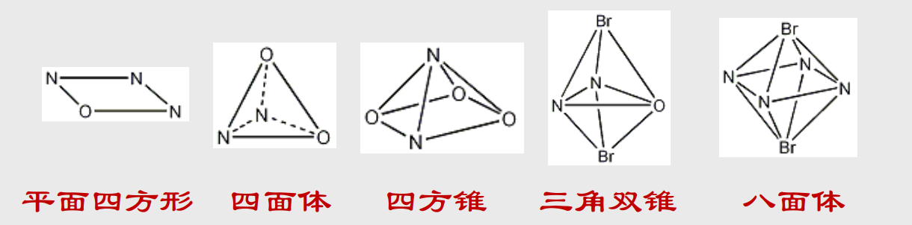
Tips:
相同的配位数也可能用不同的配位几何，同一个配位几何由于配位原子的不同也可能有结构上的差异。
7.2.2 立体异构
配合物的异构现象的幕后推手是配位键，配位位置的差异可以导致异构。
我们以正方形配位几何的\({\ce{Pt^{2+}}}\)配合物\({\ce{[Pt(NH3)2Cl2]}}\)为例子，两个\({\ce{Cl-Pt}}\)配位键的相对位置不同形成了顺式\({(\textbf{cis-})}\)与反式\({(\textbf{trans-})}\)两种异构体~~（和有机真的很像啊！）~~：
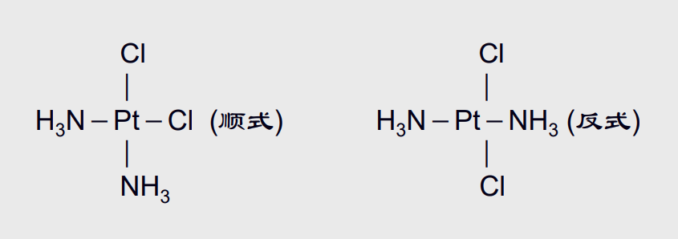
这两种异构体分别为顺铂与反铂（命名方式与有机类似），两者性质存在差异，其中顺铂是一种重要的抗癌药物。
7.3 配位键理论
7.3.1 共价配位键
正如前面所说的，我们对配位几何的研究使得我们联想到之前所学习的原子轨道或者杂化轨道。
两者之间有没有联系？
Tips:
+ 共价配位键：由配原子中带有孤对电子的原子轨道（杂化轨道）与中心金属离子（原子）的原子空轨道（杂化轨道）重叠而形成。可简化为\({L \to M}\) + 共价配位键理论：配体与中心离子（原子）通过共价配位键结合；孤对电子对由配原子提供；根据配位几何通常可推断金属离子采用的杂化轨道类型。
7.3.2 金属离子的杂化轨道
Tips:
常见的金属离子杂化方式有： + \({\ce{sp^3}}\)杂化：具有四面体配位几何的配合物中，金属离子采取\({\ce{sp^3}}\)杂化轨道形成配位键。 + \({\ce{dsp^2}}\)杂化：如前文提到的\({\ce{Pt^{2+}}}\)配合物中形成的平面正方形配位几何，一般认为其中心离子采用的是\({\ce{dsp^2}}\)杂化。 + \({\ce{d^2sp^3}}\)杂化：形成正八面体配位几何的配合物，如\({\ce{Co^{2+}}}\)配合物。
我们有如下表格：
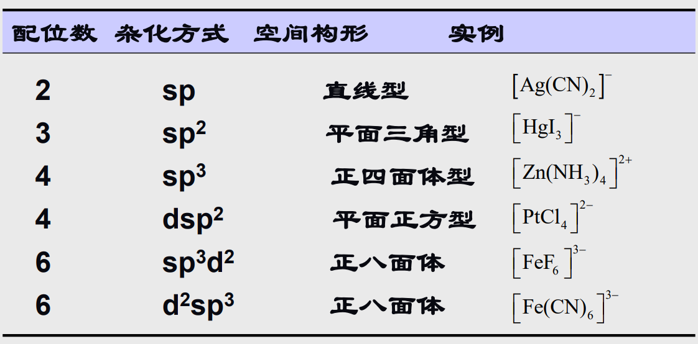
Caution:
特别注意上表中杂化方式的书写形式。Tips:
我们简单以一个例子来说明一下杂化过程：\({\ce{Ni^{2+}}}\)离子：原子序数28，核外电子数26，外层电子构型\({\ce{3d^8}}\)
+ “杂化过程”：原先分布在不同\({\ce{d}}\)轨道上的2个\({\ce{d}}\)电子配对后占据同一个轨道，空出一个\({\ce{d}}\)轨道参与\({\ce{dsp^2}}\)杂化。
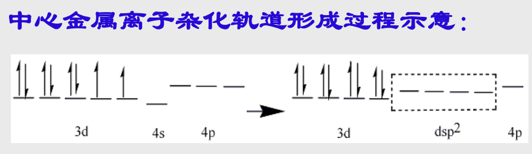
7.3.3 配原子的孤对电子
由前文，我们知道配位键的形成依赖于中心离子（原子）提供的空轨道与配原子提供的孤对电子
水分子与氨分子中的氧原子，氮原子在\({\ce{sp^3}}\)轨道上存在有孤对电子，可以作为配体。
同样的，含氮的杂环化合物，比如吡啶，咪唑和卟啉等，其上的氮原子也有存在孤对电子。
特别的，如果一个在原子轨道（杂化轨道）上存在孤对电子的碳原子，也可以与金属离子形成配位键，含有如此构成的碳-金属配位键的化合物是金属有机化合物。见前文例子
这样子的碳该如何形成呢？比如我们在苯环上随便拔掉一个\({\ce{H+}}\)，就可以得到一个不稳定的碳负离子，其上存在孤对电子。由于碳负离子并不稳定，金属有机化合物一般出现在催化剂当中。
7.3.4 π-配位
对于参与形成碳-碳间\({\pi}\)键的一对\({p}\)电子，也可以参与形成金属-碳之间的配位键，这种配位称为\({\pi}\)配位
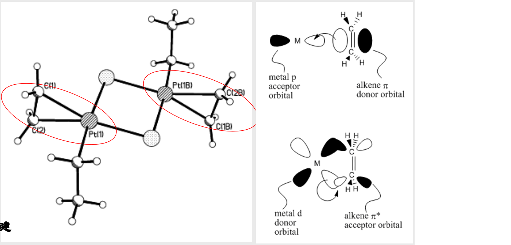
这种配位有什么实用上的意义吗？
我们都知道，形成双键，三键，相当于对原先的单键进行“加固”，使得其不是很“愿意”加入到化学反应当中。
但是如果我们形成了\({\pi}\)配位，原先的双键相当于被我们“打开了”，就很有利于其发生化学反应，比如加聚反应之类的。这种性质被广泛用于催化当中。
Tips:
我们以环戊二烯为例子来说明金属有机化合物。 + 环戊二烯与强碱作用，成为环戊二烯阴离子，6个\({\ce{p}}\)电子形成离域大\({\pi}\)键，可以参与到配位键的形成当中。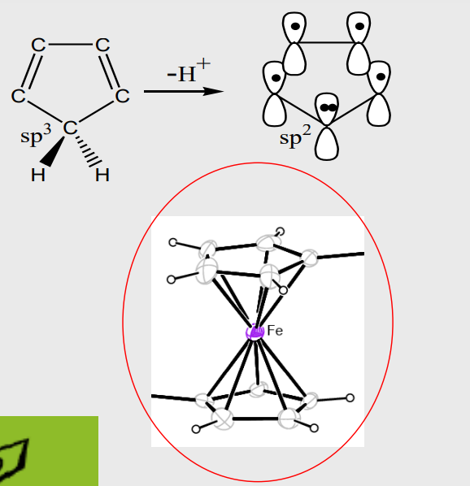
7.3.5 具有离子键性质的配位键
前文我们说到，很多配合物都具有规则配位几何，因此我们联想到可以用类似杂化轨道的理论去解释，通常我们认为这种配位键是共价性质的。
但是在实际研究中我们发现，一些配合物不具有规则的配位几何，也就是它们的几何形状不规则。考虑到离子键不具有方向性，我们可以认为该配位键具有离子键性质，也就是配原子的孤对电子与金属阳离子之间的静电作用形成了配位键。
特别地，我们认为稀土配合物的配位键具有离子键性质。
Tips:
关于配位键的共价性质与离子性质，很多时候也存在争议： + 比如\({\ce{[Fe(H2O)4SO4]2}}\)的水溶液可以导电，但是其晶体结构显示6个\({\ce{Fe-O}}\)的配位键长几乎相等，呈现出共价性质 + 再比如苯甲酸与\({\ce{Mn^{2+}}}\)离子桥联配合物中多个\({\ce{C-O-Mn}}\)的键角并不相同，键长也并不相同，存在离子键与共价键共存的情况
7.4 配体交换和配位平衡
7.4.1 配位平衡原理
“四大平衡”之一——配位平衡
配位平衡同样符合化学平衡的一般性原理，对其的研究同样可以借鉴我们之前对其他平衡研究的经验。
同样的，在配位平衡中也存在平衡常数，例如以下反应：
达到平衡时：\({{\ce{\displaystyle\frac{[Cu(NH3)3^2+][NH3]}{[CU(NH3)4^2+]}}} = K_1 = 5 \times 10^{-3}}\)
平衡常数\({K_1}\)成为配合物的不稳定常数，也表示为\({K_{不稳}}\)，\({K_{不稳}}\)值越大，配合物越容易分解。
不难看出，\({K_{稳} = \displaystyle\frac{1}{K_{不稳}}}\)，即稳定常数
Tips:
+ 以上例子中仅仅举出了四氨合铜离子的一级分解，此后的每一级分解都有自己的稳定常数\({K_{稳}}\)（这也提示我们对于不同的配合物存在不同的\({K_{稳}}\)） + 在一般情况下，随着配位数减少，这一系列的\({K_{稳}}\)会逐步上升（铜离子逐渐舍不得）+ 最终在溶液体系中存在的\({\ce{Cu^{2+}}}\)会很少。
7.4.2 溶解过程与配体交换
首先我们知道，在溶液中，配体与中心离子之间的配位键可以断裂或形成。假若此时溶液体系中有众多种配体分子或离子，就可能发生中心离子与配体之间的交换。
假如我们的溶剂分子具有较强的配对能力（比如含有孤对电子等），那么其对某些金属盐的溶解度就可能较大。（可以想象溶剂分子把金属离子一把拽进溶液！）
Cautions:
但是以配体对金属离子配位能力来判断其溶解度差异是不够严谨的
同样的，如同之前考虑化学平衡问题，我们对配合物在溶液中发生的中心离子与不同配体的交换，也可以通过稳定常数\({K_{稳}}\)来判断，一般来说，体系内倾向于形成\({K_{稳}}\)较大的配合物。
7.4.3 金属配合物的合成
不难想到，金属配合物溶液中的合成反应，就是配体交换的过程，对于这个过程的研究，就进入到我们之前对化学热力学，动力学的研究体系当中。
比如我们将\({\ce{[Cu(H2O)4SO4]·H2O}}\)晶体溶解在氨水中，氨分子就会与水分子发生配体交换，形成\({\ce{[Cu(H2O)2(NH3)2SO4]·H2O}}\)或者\({\ce{[Cu(H2O)3(NH3)1SO4]·H2O}}\)等不同的配合物。
Tips:
如果我们从先前所学的动力学与热力学的角度来思考的话： + 热力学层面：择有合适配位平衡常数的配体交换反应 + 动力学层面：加快反应速度，如升温加压，进行溶剂热合成。
当然让我们来看一个有趣的思考题：
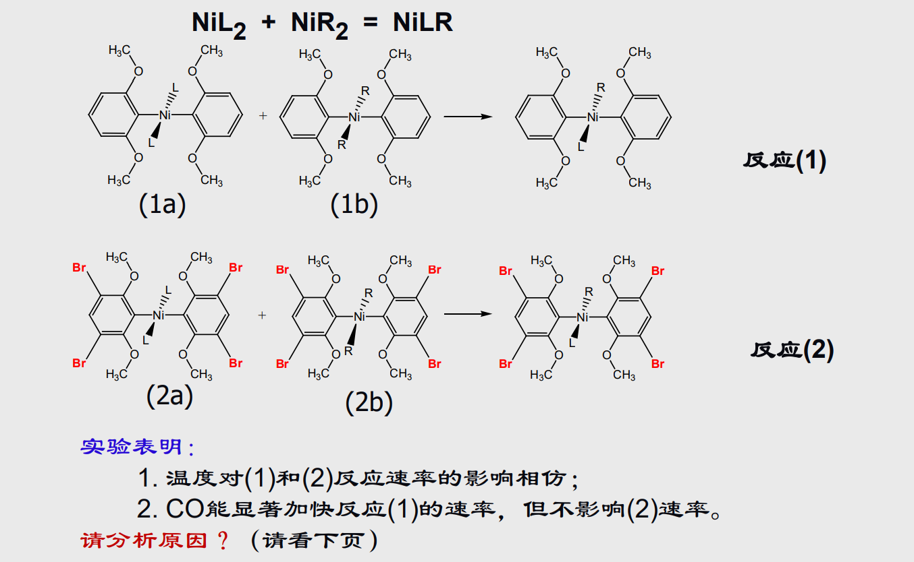
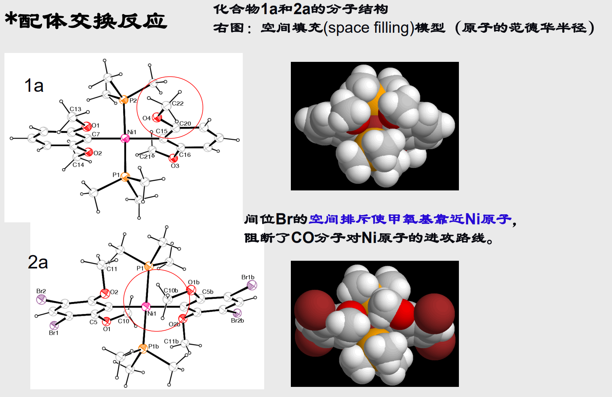
7.5 配合物的应用
7.5.1 多孔吸附材料
多齿配体与金属离子桥联配位形成的聚合配合物，固体结构中可能存在大的孔穴
当然你可以联想一下没有灌水泥之前的钢筋架，或者是有许多小孔的苏打饼干。
<图片待插入>
7.5.2 金属配合物超分子
可以用在光电管，分子电池和能量存储上。
看起来很像是小时候玩的积木，实际上有点类似于数学上的分形？
<图片待插入>
7.5.3 可能的一维导体（？）
<内容待补充>
7.5.4 工业应用
7.5.4.1 *聚合反应的催化剂
通过前文介绍的π配位机制，可以催化烯烃之间聚合。
<图片待插入>
7.5.4.2 电镀中的金属离子络合剂
<内容待补充>